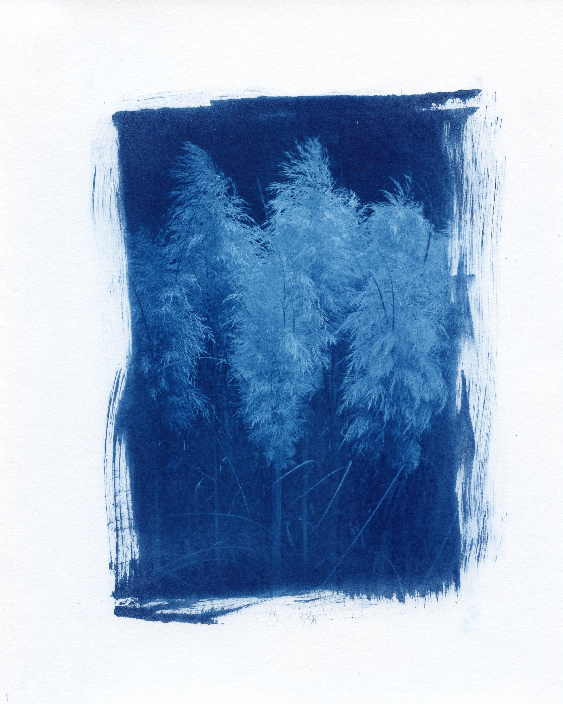

New City Arts Artist Exchange
A group artist exchange and fundraiser
September - November 2025
New City Arts Welcome Gallery
Charlottesville, VA
The Artist Exchange
I was asked to participate in the 2025-2026 New City Arts Artist Exchange, an annual event that brings together several local artists, and decided to use this opportunity to learn how to print cyanotypes. We had three events as a group: a meet and greet, a craft night, and the artist exchange dinner. With the artist exchange, we each made 14 identical (or similar) works of art. Each of the 10 participating artists received a complete set of artwork, one set is added to a New City Arts archive of past artist exchange events, and the remaining sets are used by New City Arts for fundraising for the gallery or display.
Statement about My Exchange Piece
In 2024, I completed a daily photography practice where I photographed and shared at least one digital photograph per day. I enjoy the process of film photography and decided to take one of the digital photographs from the 2024 project and bring it into the analog photography process through cyanotype printing. I turned the photograph into a digital negative, coated paper with cyanotype chemicals, exposed the negative for 36 minutes under UV light, and washed the print in a slightly acidic water bath, followed by more plain water washes (around 15-20 minutes of total washing). Unplanned, I later discovered that the photograph I selected was from 16 September 2024, my Maw Maw’s birthday (my grandmother), who recently passed away. She always supported and encouraged me in my photography.
The Photograph


Cyanotype on Hahnemühle Platinum Rag 300 gsm
Image: 7 x 5 in.; Paper: 10 x 8 in.

More Information
I also recently blogged about the process of learning how to create my first cyanotypes for this artist exchange: First Cyanotype Prints.